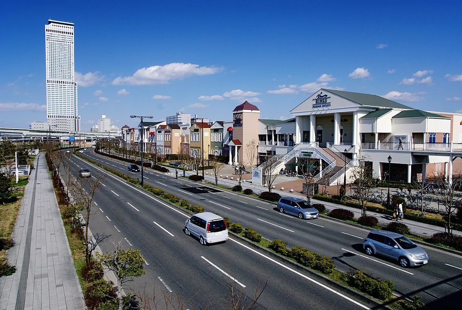
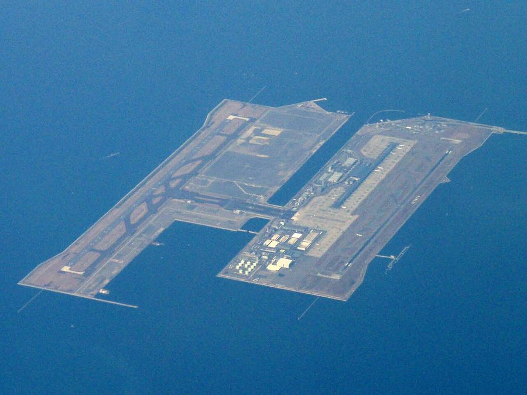
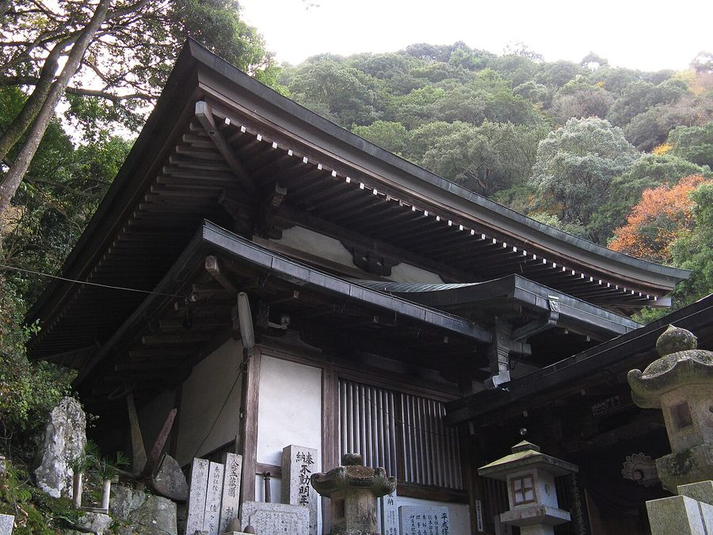
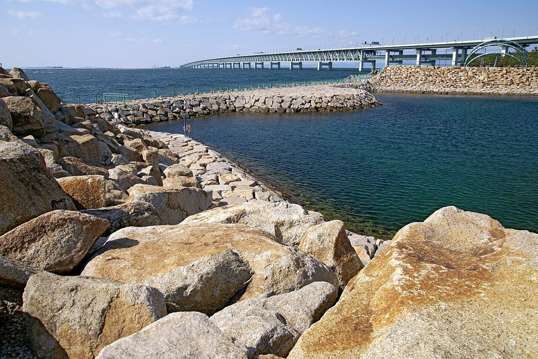

大阪府泉佐野市の日帰り温泉・銭湯・サウナ（14件）
寄り道スポット検索アプリ「ヨッテコ」の収録データから、大阪府泉佐野市の日帰り温泉・銭湯・サウナを営業時間・料金つきで一覧にしました（2026年8月時点）。
最も安いのは泉佐野市立 樫井共同浴場 旭湯（200円）。最も遅くまで入れるのは関空温泉ホテルガーデンパレス（24:00まで）。朝風呂なら天然温泉 泉州の湯 関西空港（7:00開店）。
大阪府泉佐野市はどんなまち？
数字で見る🔍大阪府泉佐野市
まちの横顔




- 地形と気候: 南部には金剛生駒紀泉国定公園に指定された和泉山脈があります。瀬戸内海式気候に属するため気候は温暖で、年間の降水量は比較的少なく、畑などの水が不足しないよう池が多くつくられてきました。
- 空港と産業: 沖合には人工島の関西国際空港があり、連絡橋など空港北端の施設を含む区域が泉佐野市域となっています。古くから日根郡の中心として商業・工業・農業・漁業が盛んで、関西国際空港の対岸に位置することから、訪日外国人旅行者の宿泊需要も多いまちです。
寄り道充実度（全国偏差値）
偏差値・順位は、ヨッテコ収録データ（2026年8月時点・26,033件）を市区町村別に集計した施設数の全国分布（1,728市区町村）から毎回算出しています。カードを押すとカテゴリ別の分析に切り替わります。
日帰り温泉から見た大阪府泉佐野市
21時以降も営業する店は71%、全国水準（40%）の1.8倍。——数だけでは見えない、湯の個性がここにある。
- 露天風呂がある店は64%、全国水準（46%）の1.4倍。南部に金剛生駒紀泉国定公園の和泉山脈を抱え、畑地の水を守るため池が多い市。64%という数字が、外で湯に浸かるまちであることを示しています。
- 天然温泉の店は43%。全国水準（67%）より少なめの構成です。銭湯やスーパー銭湯が寄り道先の中心、という構成でしょうか。
- 夜の遅い時間に入れる店は71%。全国の40%を上回ります。関西国際空港の対岸に位置し、訪日外国人旅行者の宿泊需要が多い市。夜型の寄り道がしやすいまち、ということになります。
出典: 施設データ=ヨッテコ収録データ（26,033件・2026年8月時点）。偏差値・全国順位・全国水準は全1,728市区町村の分布から毎回算出。 / 人口=総務省「住民基本台帳に基づく人口、人口動態及び世帯数」（2026年1月1日現在） / 面積=国土地理院「全国都道府県市区町村別面積調」（2026年4月1日時点） / 森林率=農林水産省「2025年農林業センサス（農山村地域調査）」市区町村別林野率（2025年、林野率（林野面積÷総土地面積）） / 年平均気温=気象庁「平年値（1991-2020年）」。市区町村の代表点（国土交通省「大字・町丁目レベル位置参照情報」）から最も近い観測点の値 / まちの解説=日本語版Wikipedia「泉佐野市」（https://ja.wikipedia.org/wiki/泉佐野市、2026年8月21日取得、CC BY-SA 4.0） / 写真=Wikimedia Commons（各キャプションに作者・ライセンスを記載）
曜日別の営業施設数
| 月 | 火 | 水 | 木 | 金 | 土 | 日 |
|---|---|---|---|---|---|---|
| 13 | 14 | 14 | 14 | 13 | 14 | 14 |
月・金曜日が最も休みが多く（各1件が定休）、年中無休は12件です。※営業時間データのある14件で集計
入浴料金の分布（大人）
| 500円以下 | 2件 | |
| 501〜800円 | 5件 | |
| 801〜1,200円 | 4件 | |
| 1,201円以上 | 1件 |
料金が確認できた12件で集計。
施設一覧
| 施設 | 営業時間 | 料金（大人） |
|---|---|---|
| なごみ湯 露天風呂サウナ 関西空港近郊の下町銭湯。軟水が特徴。朝風呂営業あり。 | 15:00〜24:00（金休） | 600円 |
| ファーストキャビン関西空港 関西空港内に2023年5月に大浴場利用が開始された簡易宿所。フライト前後の限られた時間に大浴場でリフレッシュ可能。タオル… | 00:00〜24:00 | 1,800円 |
| レフ関空泉佐野 露天風呂サウナ 関空駅隣接のホテル併設。露天風呂・男女別サウナ・水風呂を完備 | 15:00〜24:00 | 1,000円 |
| 変なホテル 関西空港 天然温泉露天風呂 | 09:00〜18:00 | 700円 |
| 天然温泉 泉州の湯 関西空港 天然温泉露天風呂サウナ | 07:00〜24:00 | 900円 |
| 岩塩 りんくうの湯 露天風呂サウナ | 09:00〜24:00 ※曜日により異なる | 700円 |
| 泉佐野市立 樫井共同浴場 旭湯 泉佐野市立の公営共同浴場。地域住民向けの低価格で利用できる公衆浴場。 | 16:30〜22:00 | 200円 |
| 泉佐野市立 鶴原共同浴場 扇湯 泉佐野市立の共同浴場。市民の利用を推奨。 | 16:30〜22:00 ※曜日により異なる | 200円 |
| 犬鳴グランドホテル 紀泉閣 露天風呂サウナ | 11:00〜22:00 | — |
| 犬鳴山温泉 み奈美亭 天然温泉露天風呂サウナ 犬鳴山温泉の特徴は、肌にしっとりと染み渡る泉質で、冷え性やリューマチ、婦人病に効くと言われている | 11:00〜21:00 | 1,200円 |
| 犬鳴山温泉 不動口館 天然温泉露天風呂 犬鳴山温泉 不動口館 - Inunaki Mountain Onsen Inn (Currently closed fo… | 11:00〜21:00 | 900円 |
| 犬鳴山温泉 山乃湯 天然温泉 | 10:00〜18:00 | 700円 |
| 羽倉崎温泉 | 16:00〜23:30（月休） | 600円 |
| 関空温泉ホテルガーデンパレス 天然温泉露天風呂サウナ 関空温泉ホテルガーデンパレスは、泉佐野市に位置する温泉ホテル。貸切温泉と日帰りプランを提供 | 10:30〜24:00 | — |